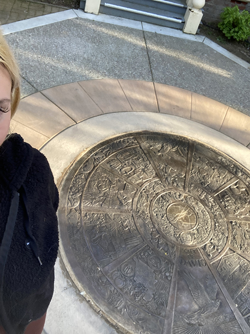
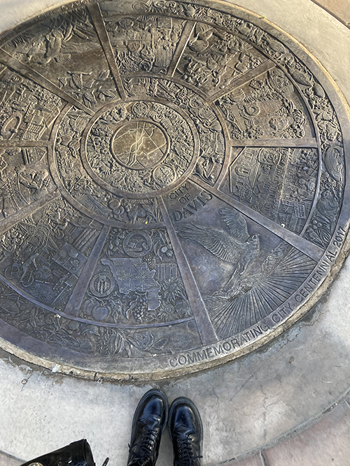

I found the themes and values section of the seal the most interesting. The themese represented are aspiration, community, cooperation, compassion, leadership, innovation, engagement, global citizenship, stewardship, vision, and optimism. I find it intersting how each of these values has its artistic representation within the seal. I also found the sectioning honering putah creek to be very itneresting, as this is the native habitat.